Possíveis erros
1. Erros e soluções
1.1. Erro de conexão ao servidor e banco de dados
Descrição do erro:
Ao tentar selecionar o banco de dados no ENBLAU, aparece uma mensagem de erro quando o servidor ou a instância não são encontrados.
Este problema pode ser causado por bloqueios do antivírus ou firewall no servidor onde o ENBLAU é executado.
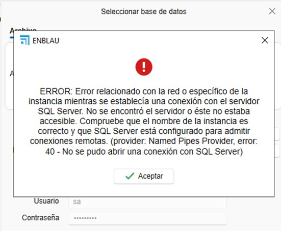
Solução:
Verifique as regras e exceções do antivírus ou firewall no servidor. Exemplo:
- No Firewall → Configurações avançadas → Regras de entrada, verifique se as portas 1433 TCP (porta padrão do SQL Server) e 1434 UDP (para descoberta de instância) estão habilitadas:
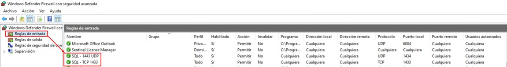
- No SQL Server Configuration Manager, verifique se a instância ENDADES2022 tem o TCP/IP habilitado:
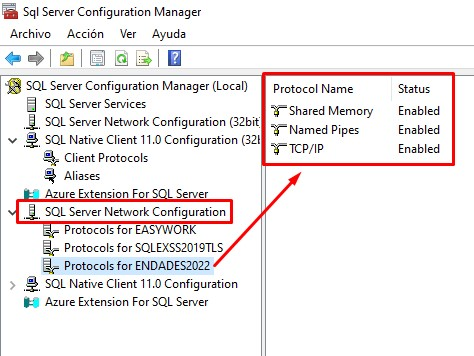
ℹ️ Nota: Para mais detalhes, consulte a seção 2. Configurações de antivírus e firewall no guia Configuração do Sistema.
Após verificar, acesse enCONNECT e selecione o servidor e o banco de dados.
1.2. Erro de conexão com a fábrica
Descrição do erro:
Ao tentar conectar-se à fábrica, aparece um erro indicando que o caminho de execução para conectar-se ao Logikal não está definido corretamente.
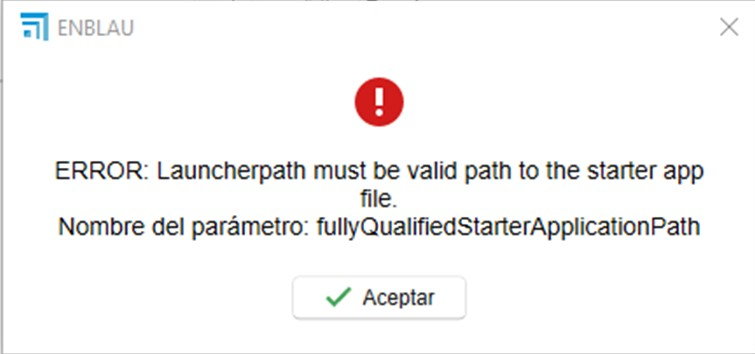
Solução:
Verifique se o caminho do aplicativo Logikal está correto.
- No ENBLAU, vá para:
Geral → Logikal - Conexão e Projetos.
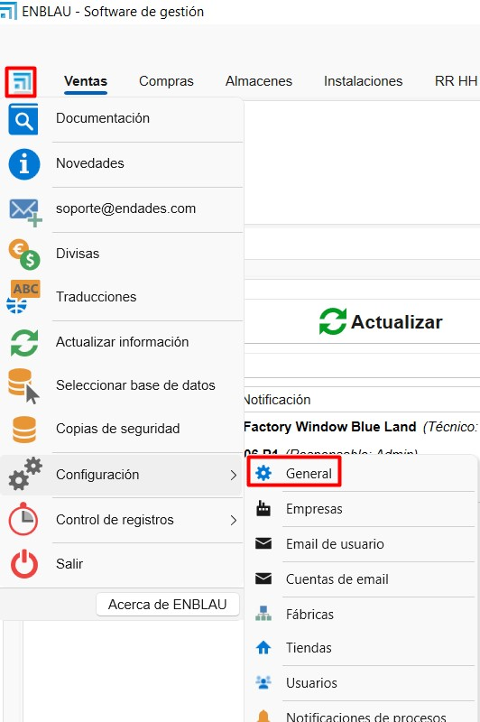
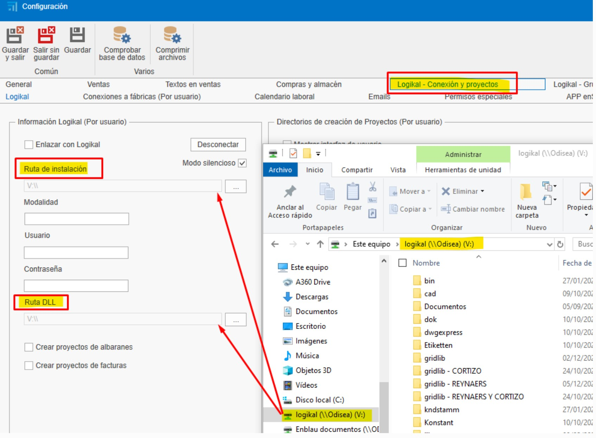
1.3. Erro de interface ERP
Descrição do erro:
Ao tentar conectar-se à fábrica, aparece um erro indicando que não foi encontrada uma licença válida para a interface ERP do Logikal.
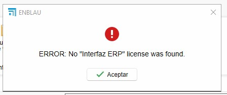
Solução:
Para estabelecer a conexão com a fábrica, é necessário ter instalado o módulo ERP do Logikal.
Entre em contato com a Orgadata para gerenciar a licença:
- Email: customer.support@orgadata.com
- Ligue para o técnico responsável pelo suporte do Logikal.
1.4. Erro de acesso à fábrica Logikal
Descrição do erro:
Ao tentar ligar-se à fábrica (Logikal), é apresentado um erro de acesso no caminho da pasta onde o Logikal está a ser executado.

Solução:
Para estabelecer a ligação com a fábrica, é necessário definir a pasta como confiável. Para isso, no Windows aceder a Rede e Internet > Opções da Internet:
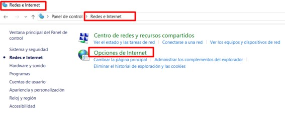
Em seguida, em Propriedades da Internet, ir ao separador Segurança > Intranet local > Sites > Opções avançadas e adicionar estes 2 sites web file://servidor e servidor.
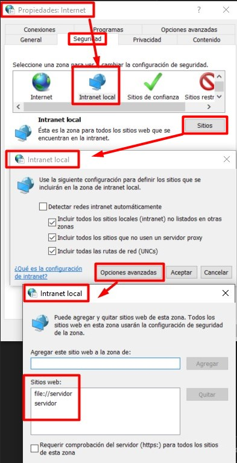
1.5. Erro de ligação ao servidor a partir do enSITE
Descrição do erro:
Ao tentar conectar-se ao servidor a partir do aplicativo enSITE (tablet), aparece uma mensagem de erro relacionada à conexão com o servidor SQL.

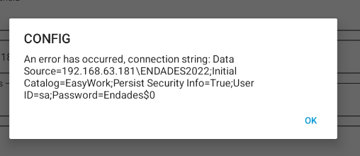
Solução:
-
Verificar a rede:
Certifique-se de que o tablet está conectado à mesma rede local do servidor onde está o banco de dados. -
Verificar o firewall e antivírus:
Verifique se o firewall e/ou antivírus não estão bloqueando a conexão entre o dispositivo e o SQL Server.
Adicione regras ou exceções, se necessário. -
Verificar a configuração das portas:
No servidor, certifique-se de que as portas usadas pelo SQL Server estão habilitadas, incluindo:-
1433/TCP (porta padrão do SQL Server). Verificar e configurar em SQL Server Configuration Manager:
- Vá para SQL Server Network Configuration → Protocols for ENDADES2022.
- Em Propriedades TCP/IP → Endereços IP, certifique-se de que todos os IPs tenham a porta TCP configurada como 1433 e as portas TCP dinâmicas definidas como 0.
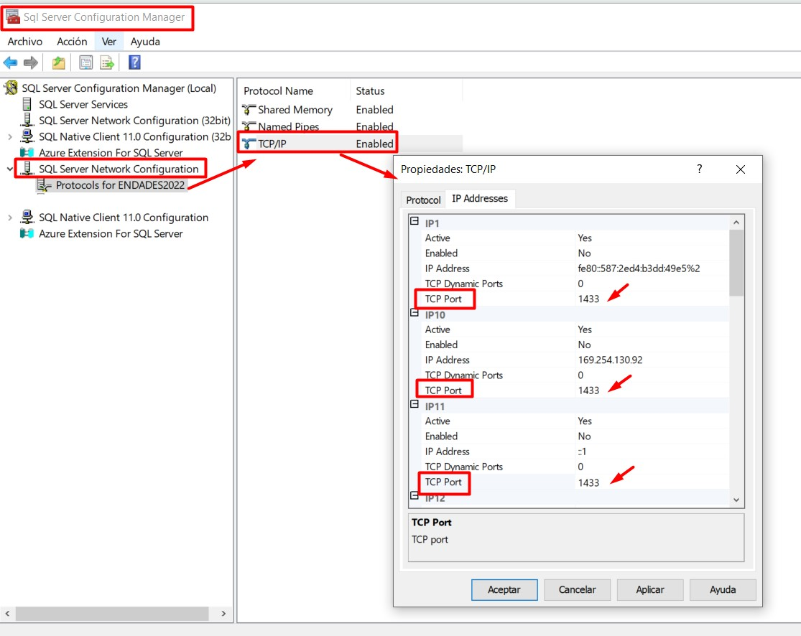
-
1434 UDP (para descoberta de instância)
-
ℹ️Nota: Este erro é comum quando há conflitos nas configurações de rede ou segurança. Validar todos os pontos acima geralmente resolve o problema.
1.6. Erro de ficheiro
- Descrição do erro:
Este erro ocorre quando o Windows, ocasionalmente, corrompe determinados ficheiros. Pode estar relacionado com a configuração do sistema operativo.
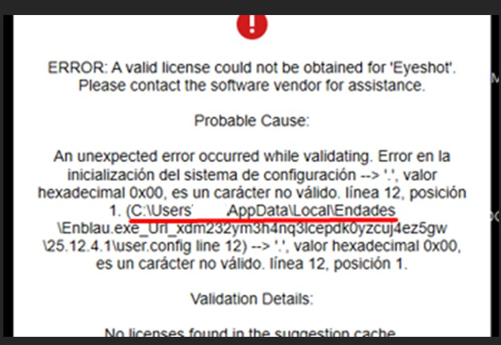
Solução:
-
Eliminar a pasta:
Ao eliminar a pasta indicada no caminho apresentado pelo erro, o problema fica resolvido.- Fechar o ENBLAU.
- Eliminar a pasta
C:\Users\User_name\AppData\Local\Endades - Abrir o ENBLAU.
1.7. Erro de registo da licença
Descrição do erro:
Em algumas ocasiões, ao abrir o ENBLAU, o sistema pode solicitar novamente o registo da licença.
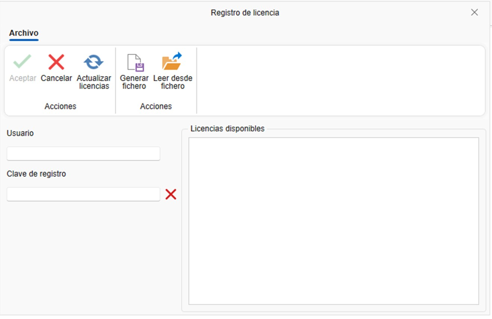
As possíveis causas são as seguintes:
- O ENBLAU está instalado num servidor e o computador a partir do qual é executado acede através de uma unidade de rede. A ligação pode ter falhado devido a alterações ou atualizações no servidor.
- O computador a partir do qual o ENBLAU é executado não está visível na rede.
- Existem problemas de permissões na unidade de rede.
- Problemas com o endereço IP e o nome do servidor com a configuração da red.
Solução:
-
Verificar se a rede está a funcionar corretamente e se não existem problemas de conectividade.
-
Solução para o controle de licenças do ENBLAU. Configurar corretamente o nome do servidor e seu endereço IP no arquivo hosts do Windows. Esta solução se aplica quando há uma configuração de rede incorreta.
-
A partir do servidor, abrir o enUPDATE e sincronizar a opção Licença e atualizações. Em seguida, abrir o ENBLAU diretamente a partir do servidor para verificar se é executado corretamente.
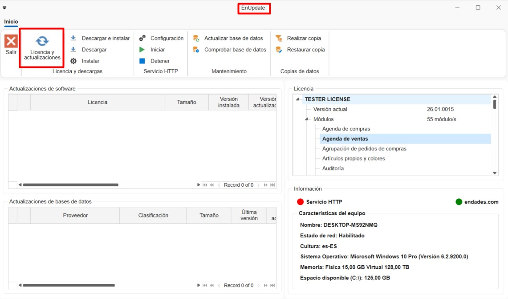
- Verificar se a licença da aplicação está em dia relativamente aos pagamentos. A licença expira automaticamente; nesse caso, contactar o suporte técnico através de comercial@endades.com.
⚠️ Importante: É obrigatório usar, no mínimo, o SQL Server 2022 para garantir a compatibilidade com as versões do ENBLAU e do enSITE.
 Español
Español
 English
English
 Italiano
Italiano
 Português
Português